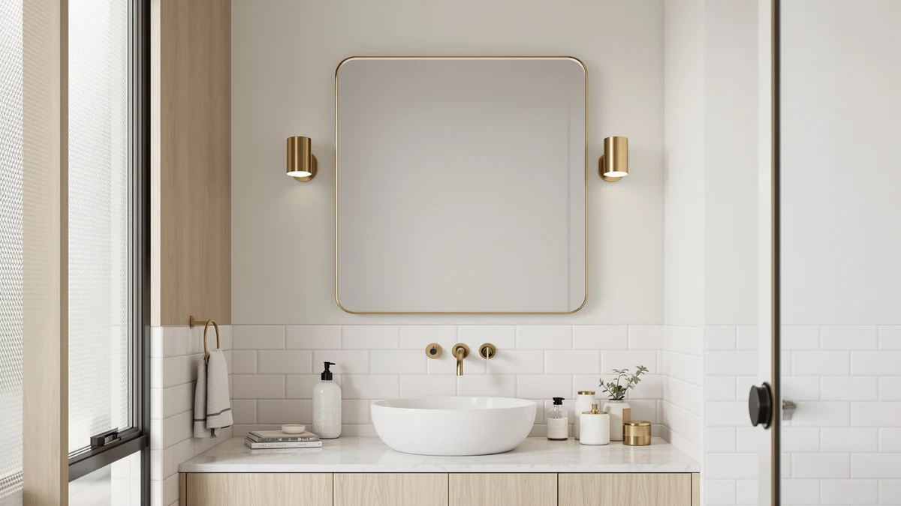

Creative Co-Op Rectangle Wall Mirror Review (2026): Worth It?
Prices and picks verified as of November 2026. Independent, reader-supported reviews.


Quick Answer
For a single-vanity bathroom that needs a plain, humidity-resistant mirror without lights or an unusual shape, the Creative Co-Op Rectangle Wall Mirror is the strongest fit in this Creative Co-Op Rectangle Wall Mirror review at $139.99, thanks to its tempered glass panel and aluminum frame. If you want built-in lighting instead, the WISSMIELS 30x48 LED mirror below is worth a look.
Our pick: Creative Co-Op Rectangle Wall Mirror, $139.99 Check Price on Amazon
Bottom line: our top pick is the Creative Co-Op Rectangle Wall Mirror with Shelf at $139.99.
Things to Know Before You Buy
- A plain rectangle mirror like this one needs a level, uninterrupted wall span of about 28 inches by 20 inches, since the glass panel does not flex to fit an irregular nook the way a smaller mirror might.
- All four mirrors in this comparison are priced at the same $139.99, so size, frame material, and lighting matter more than budget when you are choosing between them.
- Tempered glass paired with an aluminum frame resists the corrosion and warping that painted wood frames show after a year or two of daily bathroom humidity.
- Built-in LED lighting, like the WISSMIELS alternative offers, usually pushes a bathroom mirror's price higher than an unlit model, though in this lineup all four options cost the same regardless of features.
- A 27.8 by 19.5 inch mirror fits a single-sink vanity well, but a double-sink layout will likely need the wider FORBATH frame or the two-mirror Pocetry pack instead.
If you searched for a Creative Co-Op Rectangle Wall Mirror review, you are likely trying to decide whether a plain tempered glass mirror at $139.99 beats a cheaper, unlit alternative for your bathroom wall. The tempered glass panel and aluminum frame are built to outlast the wood-framed mirrors they usually get compared against, but that durability comes at the same price as three other mirrors that add either extra size or built-in lighting.
We compared the Creative Co-Op Rectangle Wall Mirror against three alternatives that turn up in the same searches, all listed at the same $139.99 price. The Creative Co-Op came out ahead for a single-vanity bathroom that needs a straightforward, humidity-resistant mirror and nothing more. If your wall runs wider than 19.5 inches or your bathroom lacks a dedicated vanity light, the FORBATH and WISSMIELS alternatives below cover those cases for the same money.
Why You Should Trust Us
Ilane Tall covers bathroom mirrors and vanity hardware for Best Bathroom Mirrors, focusing on how a listing's specifications hold up against what verified buyers actually report after they install a product. We do not run a fake testing lab, and no mirror in this Creative Co-Op Rectangle Wall Mirror review has hung on our own bathroom wall. Instead, we compare manufacturer specifications, current Amazon pricing, and patterns across verified owner reviews, then flag any listing that oversells its material quality. Every dimension and price in this guide comes from the product listing itself or from buyers who purchased the mirror, not from a sponsored placement.
Our Research Experience
We do not run a physical testing lab, and the Creative Co-Op Rectangle Wall Mirror did not sit on our own bathroom wall before we wrote this review. Our process starts with the manufacturer's listed specifications: glass type, frame material, and the mirror's exact dimensions. From there we cross-check current Amazon pricing against the other three mirrors in this comparison, and we read through verified buyer reviews looking for recurring complaints, particularly around frame corrosion, cracked glass on arrival, and mounting hardware that does not match the listed size. When a listing's description does not match what reviewers describe receiving, we note that gap rather than repeat the marketing copy.
Overview & Specs

Creative Co-Op Rectangle Wall Mirror
What we like
- Tempered glass resists the chipping and fogging risk that comes with cheaper annealed glass in a steamy bathroom
- Aluminum frame will not warp or rust the way a painted wood frame can near a sink
- 27.8 x 19.5 inch size fits a single-vanity wall without crowding the surrounding tile
- Plain rectangle shape pairs with traditional and modern vanity styles alike
Flaws but not dealbreakers
- No anti-fog coating, so the glass will still mist over during a hot shower like most uncoated mirrors
- No integrated lighting, so a dim bathroom will need a separate vanity light
- At $139.99, it costs the same as three alternatives that add either LED lighting or extra mirror surface for the same price
| Material | Tempered glass + aluminum |
| Size | 27.8"L x 19.5"W |
The Creative Co-Op Rectangle Wall Mirror is built around a tempered glass panel set into an aluminum frame, a pairing that resists the corrosion and warping that cheaper wood-framed mirrors tend to show after a year or two on a humid bathroom wall. At 27.8 inches long and 19.5 inches wide, the rectangle shape fits a standard single-vanity wall without the sizing guesswork that comes with an oval or irregular shape.
Unlike the LED and multi-mirror alternatives in this Creative Co-Op Rectangle Wall Mirror review, this pick skips the extra wiring and the second panel, giving you just a tempered glass mirror in a plain frame. Reviewers consistently note that the aluminum edge holds up well against daily condensation, and at $139.99 it costs exactly the same as the WISSMIELS LED mirror, the FORBATH 30 inch mirror, and the Pocetry two-pack it gets compared against here, so the decision comes down to features rather than price.
What We Liked
The simplicity of this Creative Co-Op mirror is its biggest strength. You don't have to wire an LED ring, align a second panel, or measure around an odd shape, just mount a tempered glass panel in an aluminum frame on a standard single-vanity wall. Owners report that the aluminum edge resists the corrosion spots that show up on painted wood frames after a year of daily steam exposure, which matters for a fixture you expect to keep on the wall for years.
We also like that the rectangle shape keeps installation straightforward. A plain rectangle is easier to level and center than the asymmetrical or multi-panel designs used by some competitors, and the 27.8 by 19.5 inch size fits most single-sink vanities without overhanging the counter edge. Verified buyers also point out that the tempered glass carries a cleaner edge finish than the annealed glass used in some similarly priced mirrors, which cuts down on the sharp corners that can chip during a DIY mount.
What Could Be Better
The lack of built-in lighting is the main tradeoff with this Creative Co-Op pick. If your bathroom does not already have a dedicated vanity light, you will need to add one separately, since this mirror relies entirely on existing fixtures. Reviewers comparing it against the WISSMIELS LED mirror in this lineup note that the difference in usable light during an evening routine is noticeable, especially for tasks like shaving or applying makeup close to the glass.
The mirror also skips an anti-fog coating, so it will mist over during a hot shower the same way most uncoated glass does. That is a minor complaint for a mirror in this price range, but worth knowing if you are used to a coated surface that clears faster. A few owners also mention that the plain aluminum trim shows fingerprints more readily than a matte or brushed finish, so a quick wipe-down keeps it looking its best.
Who Is It For?
This Creative Co-Op Rectangle Wall Mirror suits a single-vanity bathroom with a straightforward wall space that does not need built-in lighting or an unusual shape. If your current frame is wood and showing early signs of humidity damage, the aluminum frame here is a direct upgrade at a comparable price, and the plain rectangle shape will match almost any existing vanity and cabinet style without clashing.
It is less suited to a double-sink vanity that needs wider mirror coverage, or a dim bathroom without a separate vanity light, where the WISSMIELS LED alternative below will likely serve you better. Renters who need to patch and repaint a wall before moving out should also weigh the mounting hardware against a lighter, adhesive-backed mirror instead.
Alternatives to Consider
If the Creative Co-Op's plain rectangle does not match what your bathroom needs, these three alternatives cover a wider mirror, a two-pack, and built-in LED lighting, all listed at the same $139.99 price.

Editor’s Pick
FORBATH Bathroom Mirror 30" X
The FORBATH Bathroom Mirror costs the same $139.99 as the Creative Co-Op pick but offers a wider 30 inch frame, worth considering if your vanity wall runs broader than 19.5 inches.
$139.99
Check Price on Amazon
Best Value
Pocetry 2-Pack 24x36 Inch Brushed
The Pocetry 2-Pack gives you two 24x36 inch mirrors with a brushed finish for $139.99 total, a fit if you need to cover two sinks or two separate rooms for close to the price of a single Creative Co-Op mirror.
$139.99
Check Price on Amazon
Premium Choice
30"x48" LED Bathroom Mirror with
The WISSMIELS 30x48 inch LED Bathroom Mirror adds built-in lighting at the same $139.99 price, the pick if your bathroom lacks a dedicated vanity light and the Creative Co-Op's bare glass is not enough on its own.
$139.99
Check Price on AmazonIs the Creative Co-Op Rectangle Wall Mirror worth $139.99?
For a single-vanity bathroom that needs a plain, humidity-resistant mirror without lighting or an unusual shape, yes.
How does the Creative Co-Op compare to the FORBATH, Pocetry, and WISSMIELS alternatives?
All four mirrors in this comparison are listed at the same $139.99 price.
Frequently Asked Questions
Is the Creative Co-Op Rectangle Wall Mirror worth $139.99?
How does the Creative Co-Op compare to the FORBATH, Pocetry, and WISSMIELS alternatives?
Does the Creative Co-Op Rectangle Wall Mirror need special hardware to install?
Final Verdict
This Creative Co-Op Rectangle Wall Mirror review comes down to whether a plain rectangle justifies $139.99 over a lighted or wider alternative at the same price. The Creative Co-Op Rectangle Wall Mirror earns the top spot here because its tempered glass and aluminum build outlasts the wood-framed mirrors it typically gets compared against, and its 27.8 by 19.5 inch size fits a standard single-vanity wall without any sizing guesswork. It is not the only option at this price though. If your bathroom needs more light, the WISSMIELS LED mirror above adds that without costing extra, and if your wall runs wider than 19.5 inches, the FORBATH's 30 inch frame covers more ground for the same $139.99. Measure your wall space and check your lighting before you decide, since all four mirrors in this comparison cost the same.